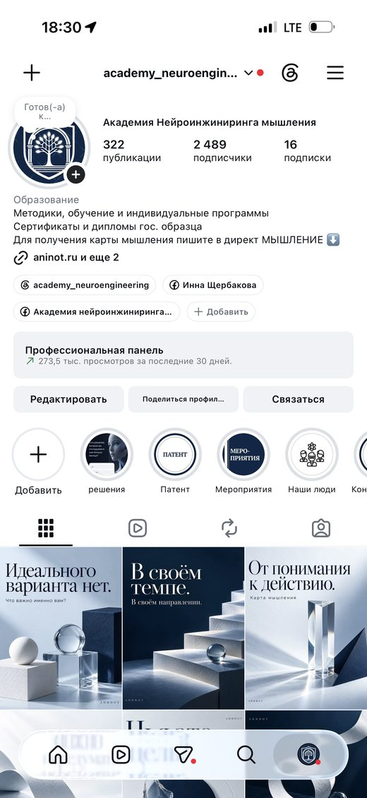
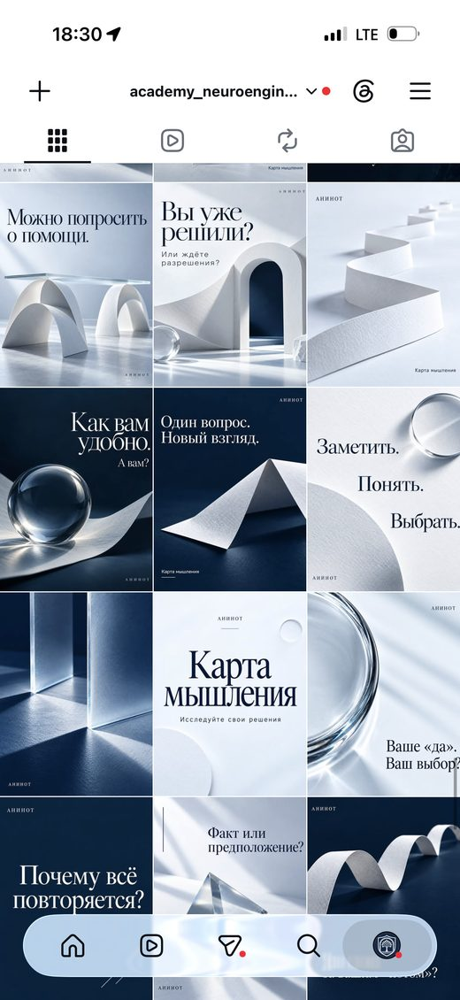
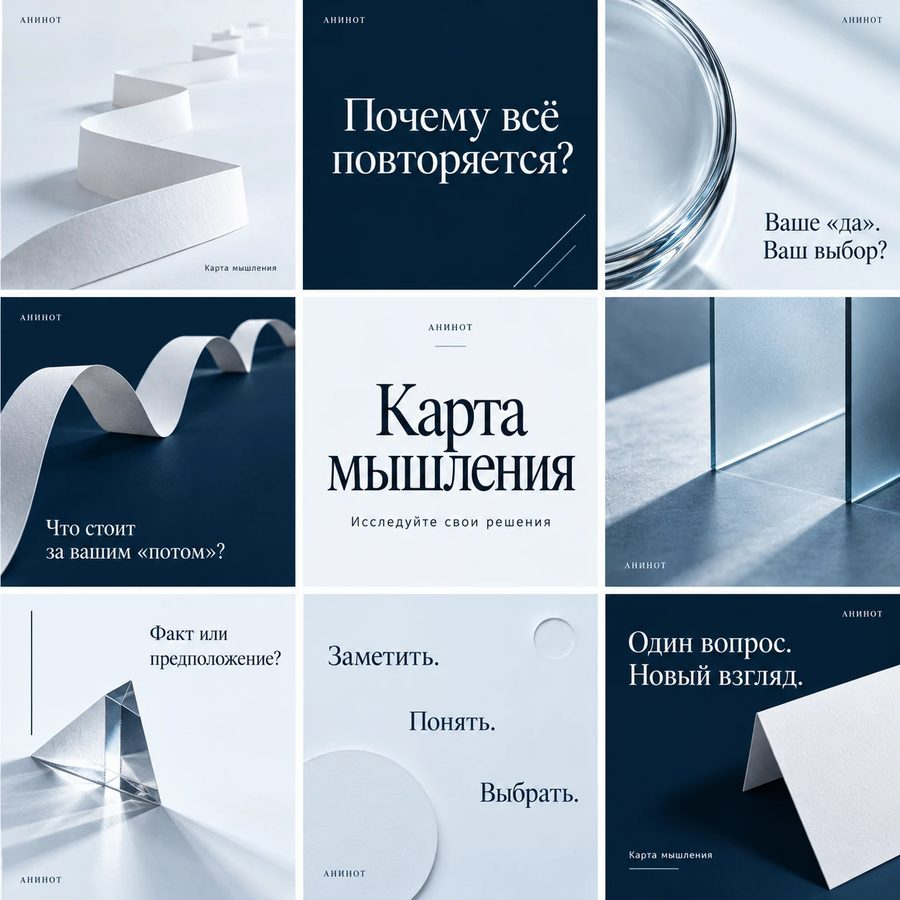

Что сделано для Академии
За сентябрь и октябрь я собрала для Академии рабочую систему продвижения: продукты, посадочные страницы, девять воронок с кодовыми словами, визуальный стиль и контент для каждой площадки. Ниже перечислено то, что готово и передано в работу.
Охват и вовлечённость
Цифры взяты из статистики каждой площадки. У площадок разные отчётные окна, поэтому период подписан у каждого блока.
| 60 дней 29.08–27.10 | 30 дней 21.09–20.10 | 90 дней 23.07–20.10 | |
|---|---|---|---|
| Просмотры | 308 183 | 273 518 | 430 372 |
| Уникальные зрители | 16 532 | 7 243 | 37 332 |
| Просмотры Reels | 304 тыс. | 271 тыс. | 426 тыс. |
| Просмотры публикаций | 3,1 тыс. | 1,6 тыс. | 3,3 тыс. |
| Просмотры сторис | 757 | 521 | 1,5 тыс. |
| Взаимодействия | 1 678 | 399 | 4 674 |
| Чистый прирост подписчиков | +253 | +52 | +738 |
| Подписчики на 20.10 | 2 489 · рост на 42,1% с 22 июля | ||
За 60 дней с 29 августа по 27 октября аккаунт набрал 308 183 просмотра и 16 532 уникальных зрителя, прирост +253 подписчика и 1 678 взаимодействий. После пика в середине сентября каждую неделю есть всплески от 700 до 1 300 просмотров в день. За последние 30 дней контентом Академии поделились 207 раз, пришло 64 новых подписчика. Reels дают 99% просмотров, поэтому видео остаётся главным форматом привлечения.
Пять роликов набрали больше 10 тысяч просмотров
Ядро аудитории 25–54 года
79,9% подписчиков — люди 25–54 лет, платёжеспособный возраст для продуктов Академии. Женщины 59%, мужчины 41%. География: Россия 51,2%, Украина 19,7%, Казахстан 7,1%. Пик активности подписчиков — 18:00, поэтому главные публикации плана стоят на вечер.
Девять веток: 3 184 просмотра и 46 ответов
Просмотры профиля выросли на 174,9%
| Показатель | 30 дней | 90 дней |
|---|---|---|
| Просмотры профиля | 4 764 | 13 141 |
| Зрители | 3 633 | 10 045 |
| Рост к прошлому периоду | +174,9% просмотров и +159,1% зрителей за 30 дней | |
Почти все 10 тысяч зрителей за 90 дней — новые люди. Интересы аудитории: книги (153), психология (109), ИИ (101), искусство (68). Площадка приводит в профиль Академии людей, которые раньше её не видели: в разделе активности зафиксировано 112 просмотров профиля одной волной.
4 379 зрителей, рост на 140% за неделю
| Показатель | Значение |
|---|---|
| Зрители за неделю | 4 379 · +140% |
| Зрителей в среднем за день | 627 |
| Просмотры канала | 7 910 |
| Время просмотра | 7 ч 29 мин |
| Новые подписчики | +2 |
| Комментарии | 2 |
| Просмотры 19–20.10 | 2 340 · +15% |
За неделю зрителей стало в 2,4 раза больше: 4 379 против 1 838 за 7–13 октября. Зрители — взрослая российская аудитория: 89% в возрасте 35–44 лет, 79% мужчины, 75% смотрят через мобильное приложение. По возрасту это та же аудитория, на которую рассчитаны «Денежный потолок» и корпоративные решения Академии. 21 октября вышел новый ролик.
44,9 тыс. просмотров и 65 подписчиков
| Показатель | Значение |
|---|---|
| Просмотры | 44,9 тыс. |
| Подписчики | 65 · +3 с 13.10 |
| Отметки «Нравится» | 647 |
| Поделились | 131 |
| Комментарии | 11 |
| Просмотры за 7 дней до 21.10 | 158 |
Канал продолжает расти: с 13 октября прибавилось 700 просмотров и 10 отметок «Нравится». На 1 000 просмотров приходится 14,4 лайка и 2,9 репоста. Новый Shorts вышел 21 октября, следующие выпуски идут по контент-плану YouTube и RuTube.
324 лайка
11 комментариев, 1 упоминание и 2 пересылки по последним роликам. За прошлый замер было 278 лайков и 9 комментариев: плюс 46 лайков и 2 комментария между замерами.
Репост поста «Точка выбора»
Пост «Точка выбора — пауза перед важным решением» пользователи распространяют сами: зафиксирован репост со страницы Академии.
6,4% вовлечённости
Ролик «Пишите МЫШЛЕНИЕ»: 3,8 тыс. просмотров, 174 лайка, 61 пересылка, 6 репостов, 4 комментария. 61 человек переслал продающий ролик знакомым: это 1,6% от всех просмотров.
Срез всех площадок за неделю 05–13 октября
Видеоплощадки дали около 10 тысяч просмотров
Итого 9 971 просмотр видео. Вместе с публикациями (79) и сторис (31) Instagram — 10 081 просмотр.
Подписчики на 11–13 октября
| Площадка | Подписчики | Прирост |
|---|---|---|
| 2 477 | +19 | |
| TikTok | 87 | +5 |
| Telegram-канал | 63 | +2 |
| Всего | 2 627 | +26 |
TikTok вырос на 6,1% за неделю, Telegram-канал на 3,3%. Аудитория Instagram: 59% женщин, 41% мужчин.
40% взаимодействий — сохранения и отправки
Из 110 расшифрованных взаимодействий с Reels 46 приходятся на сохранения и пересылки. Это сигнал, по которому алгоритм показывает ролики новым людям.
Пик 1 367 просмотров в день публикации
1 871 просмотр и 1 838 уникальных зрителей. Ролики набирают просмотры в первые трое суток, поэтому в плане RuTube публикации идут два-три раза в неделю.
3 400 зрителей
Из них 2 000 человек увидели аккаунт впервые (58,8%). 40 лайков, 3 репоста, 1 комментарий.
1 300 просмотров за неделю
На 13 октября у канала было 44 200 просмотров за всё время и 62 подписчика. К 21 октября стало 44,9 тыс. и 65.
+2 подписчика
Канал вырос с 61 до 63 человек без отписок. С 19 октября канал переводит читателей в бот Академии.
Скриншоты статистики
исходные экраны Instagram, Threads, RuTube и YouTube на 20–27.10.2026Конверсии от просмотра до подписки
Я посчитала, какая доля аудитории проходит каждый шаг. Самый сильный результат — переход из профиля в подписку: больше половины людей, открывших профиль, остаются в аккаунте.
Путь зрителя Reels
Путь зрителя TikTok
| Показатель | Площадка | Расчёт | Значение |
|---|---|---|---|
| Вовлечённость (ER) от зрителей | 114 / 1 628 | 7,0% | |
| Доля сохранений и отправок во взаимодействиях | 46 / 110 | 41,8% | |
| Переход зрителя в профиль | 32 / 1 628 | 2,0% | |
| Подписка из профиля | 19 / 32 | 59,4% | |
| Подписка из профиля | TikTok | 5 / 8 | 62,5% |
| Доля новой аудитории в охвате | TikTok | 2 000 / 3 400 | 58,8% |
| Доля неподписчиков в охвате | по статистике | 91,7% | |
| Рост аудитории за неделю | TikTok | 5 / 82 | +6,1% |
| Рост аудитории за неделю | Telegram | 2 / 61 | +3,3% |
| Вовлечённость за 90 дней | 4 674 / 37 332 | 12,5% | |
| Подписка зрителя за 90 дней | 738 / 37 332 | 2,0% | |
| Пересылки на зрителя за 30 дней | 207 / 7 243 | 2,9% | |
| Вовлечённость продающего Reels «МЫШЛЕНИЕ» | 245 / 3 800 | 6,4% | |
| Вовлечённость веток | Threads | 60 / 3 184 | 1,9% |
| Доля просмотров у главной ветки | Threads | 1 800 / 3 184 | 56,5% |
| Рост зрителей за неделю 14–20.10 | RuTube | к прошлой неделе | +140% |
| Лайки на 1 000 просмотров | YouTube | 647 / 44 900 | 14,4 |
| Рост просмотров профиля за 30 дней | Threads | к прошлому периоду | +174,9% |
58 ответов и комментариев от аудитории
Люди пишут развёрнутые ответы о деньгах, статусе и отношениях, спорят друг с другом и делятся своим опытом. Каждая такая ветка подводит к продуктам Академии: тема денег ведёт к «Денежному потолку», тема выбора — к «Точке выбора» и «Карте мышления». В те же дни подписчики оставляли комментарии и сохраняли ролики, а профиль одной волной открыли 112 человек.
50 заявок в бот и 10 продаж микропродуктов
Расчёт по измеренной доле перехода в Instagram: 50 / 0,0197 ≈ 2 540 уникальных зрителей.
Охвата для цели уже хватает
Instagram и TikTok вместе собирают 5 028 уникальных зрителей в неделю. Это вдвое больше охвата, нужного для 50 заявок. Поэтому основное усилие следующих двух недель уходит в переход: кодовые слова в каждом ролике, автоответ в Direct, ссылка на бот в профиле и закреплённых публикациях.
Выручка плана: 10 продаж «Карты мышления» дают 19 900 ₽. Если двое из десяти выберут комплект за 6 900 ₽, выручка вырастет до 29 720 ₽.
По какой стратегии идёт продвижение
Аудитория приходит через полезный экспертный контент, совершает одно понятное действие (кодовое слово, переход в бот) и получает предложение микропродукта или диагностики. Академия, личный бренд и персональные форматы ведутся отдельными линиями с отдельным учётом.
Массовая аудитория
Быстрый вход через продукт за 1 990–2 000 ₽ без длинного прогрева: человек уже проявил интерес к конкретной теме.
Предприниматели и компании
Отдельная CRM-цепочка: цикл сделки длиннее, главный показатель — квалифицированные запросы, дошедшие до встречи.
Квартальный коммерческий план
1 000 000 ₽ валовых поступлений за 17.09–31.10. С учётом расходов периода около 143 000 ₽ валовой ориентир — 1 144 000 ₽.
Минимальный 222–390 тыс. ₽, базовый 1 094–1 130 тыс. ₽, сильный от 1 316 тыс. ₽. Ноябрь в базовом сценарии 1,85–2,0 млн ₽.
После первых 30 000 ₽ рекламы считаем стоимость покупателя микропродукта. Ориентир — до 1 800 ₽ за покупателя, выше этой планки бюджет перераспределяется.
Источники разговоров: личные контакты 15, рекомендации 8, база Академии 12, TenChat 10, партнёры 5.
Задача каждой социальной сети
У каждой площадки своя роль в воронке и свои показатели, по которым я оцениваю результат каждую пятницу.
Главный канал продаж микропродуктов
- Reels привлекают, сторис и карусели объясняют продукт
- Кодовые слова ведут в Direct и на лендинг
- Закрепы и Highlights работают как витрина Академии
Показатели: охват неподписчиков, посещения профиля, кодовые слова, переходы, покупки.
Охват новой аудитории и тест хуков
- Короткие ролики 20–40 секунд с хуком в первые 2 секунды
- Лучшие хуки переносятся в Reels и Shorts
- Переход через ссылку в профиле в бот
Показатели: новые зрители, просмотры профиля, подписки, переходы в бот.
Доверие, прогрев и перевод в бот
- Научно-популярные посты с инфографикой
- Лид-магниты выдаются через бот
- Еженедельный интерактив «Разбор одной ситуации выбора»
Показатели: просмотры постов, переходы в бот, заявки, покупки после прогрева.
Экспертность и поисковый трафик
- Интервью и разборы в длинном формате
- Нарезки в Shorts
- Ссылка на бот в описании и закреплённом комментарии
Показатели: просмотры, время просмотра, подписчики, переходы из описания.
Взрослая аудитория и длинные тексты
- Экспертные посты в формате Академии
- Темы отношений, денег, статуса и родительских сценариев
- Корпоративные материалы для руководителей
Показатели: охват, сохранения, переходы на лендинг и в бот.
Обсуждения и новая аудитория
- Ветки-вопросы о деньгах, статусе и отношениях
- Ответы Академии в обсуждениях
- Переход в профиль Instagram и к продуктам
Показатели: просмотры веток, ответы, просмотры профиля, переходы.
Точка учёта заявок и продаж
- Выдача лид-магнитов и PDF «7 вопросов»
- Описание продуктов и кнопка оплаты
- Метка источника у каждой заявки
Показатели: запуски бота по источникам, заявки, оплаты, конверсия в покупку.
Независимые рекомендации
- Три размещения в неделю по плану
- Продукт за честный отзыв
- UTM-ссылка на каждого автора
Показатели: размещения, охват, переходы, покупатели, стоимость покупателя.
Корпоративные клиенты
- Персонализированные сообщения руководителям
- Корпоративный PDF о когнитивных ограничениях команд
- Запрос на встречу и коммерческое предложение
Показатели: квалифицированные запросы, встречи, предложения, договоры.
Что сейчас продвигается
Все микропродукты собраны один раз и продаются без сопровождения: человек получает персональный результат в первые 10 минут после оплаты.
| Уровень | Продукт | Формат | Цена | Как продвигается |
|---|---|---|---|---|
| Входной | Карта мышления | Веб-приложение: тест на 48 вопросов, результат на экране и персональный план на 14 дней | 1 990 ₽ | МЫШЛЕНИЕ КАРТА |
| Входной | Точка выбора | Нейросхема из 7 шагов принятия решения и практика «Точка ясности» | 2 000 ₽ | ВЫБОР |
| Развитие | Паспорт версии | Книга-конструктор на 68 страниц и 12 карточек | 2 900 ₽ | Повторная покупка, ссылка в профиле |
| Тематический | Денежный потолок | Веб-калькулятор: стоимость удержания уровня, денежная конструкция, три решения на 90 дней | 3 900 ₽ | Предпринимательский запрос, ссылка в профиле |
| Комплект | Три продукта | Карта мышления, Паспорт версии и Денежный потолок одной покупкой | 6 900 ₽ | Кнопка на странице оплаты |
| Бесплатно | PDF «7 вопросов» | Лид-магнит: как вы принимаете решения | 0 ₽ | ВОПРОСЫ |
| Сообщество | Исследовательские группы | Бесплатное участие в группах Академии и сообщество психологов | 0 ₽ | ПСИХОЛОГ |
| Углублённый | Диагностика Академии | Следующий уровень после микропродукта | по запросу | Предложение после покупки |
Девять воронок Академии
Каждое направление получает свою воронку, технический маршрут и измеримый результат. Запуск идёт по очереди: сначала P0, затем P1 и P2.
Кодовые слова
| Слово | Где используется | Задача | Куда ведёт |
|---|---|---|---|
| МЫШЛЕНИЕ | Reels, TikTok, Shorts | Привлечение новой аудитории | Direct → лендинг «Карты мышления» |
| КАРТА | Сторис, карусели, Telegram, продуктовые посты | Продажа заинтересованной аудитории | Описание продукта → лендинг |
| ВЫБОР | Контент о ситуации выбора | Продажа «Точки выбора» | Объяснение инструмента → лендинг |
| ВОПРОСЫ | Reels, сторис, Telegram | Сбор контактов через пользу | Бот → PDF → «Карта мышления» |
| ПСИХОЛОГ | Reels сообщества психологов | Набор в бесплатное сообщество | Короткая форма → доступ к материалам |
Критическая связка
Один сценарий с несколькими триггерами. CRM фиксирует обращение, источник и кодовое слово, поэтому статистика по каждому слову видна отдельно.
Что смотрим по пятницам
Какие источники дали качественный трафик, какие материалы вызвали целевые действия, какие заявки стали оплатой, на каком шаге теряются люди и какие воронки масштабировать.
Оформление и публикации
Визуальный стиль Академии: светлая бумага, стекло и глубокий полуночный синий. Для Telegram — посты-практики и научная инфографика.


Оформление публикаций Instagram
серия «Карта мышления»: бумага, стекло, полуночный синий
Карусель «Эффект иллюзорной правдивости»
рубрика «Психология и мозг» · 5 слайдов · исследование Hassan & Barber (2021)Карусель «Пронойя»
8 слайдов · эксперимент Ричарда Уайзмана · финал ведёт на тест эмоционального интеллекта в Telegram-каналеПосты личного бренда основателя
серия о решениях и ярлыках · 3 постаСторис «Денежный потолок»
опубликованы сегодня, 21.10Telegram: посты-практики
9 публикаций: мини-тесты, практики и экспериментыTelegram: посты с инфографикой
6 публикаций, 12–13 октябряОбсуждения в Threads
Ветки Академии 12–14 октября: люди отвечают развёрнуто, спорят и делятся своим опытом о деньгах, статусе и отношениях. Самая обсуждаемая ветка собрала 1,8 тыс. просмотров и 24 ответа.
Нажмите на скриншот, чтобы открыть его крупно.
Контент-планы на две недели: 22.10–04.11
Пять планов на 14 дней. Первая неделя продвигает «Карту мышления» и «Точку выбора», вторая — бесплатный PDF, сообщество, «Паспорт версии», «Денежный потолок» и комплект. Обращение к аудитории везде на «вы».
Что делаю дальше
Система продвижения Академии собрана целиком: продукты, лендинги, воронки, визуальный стиль и контент на две недели вперёд.
Instagram за 60 дней, с 29 августа по 27 октября, набрал 308 183 просмотра и 16 532 зрителя, за 90 дней аккаунт вырос на 738 подписчиков (+42,1%). Threads приводит новую аудиторию и обсуждения: 13 141 просмотр профиля за 90 дней. Больше половины людей, открывших профиль Instagram, подписываются. Охват уже покрывает недельную цель в 50 заявок, поэтому следующие две недели я сосредоточиваю на переходе в бот и продажах.